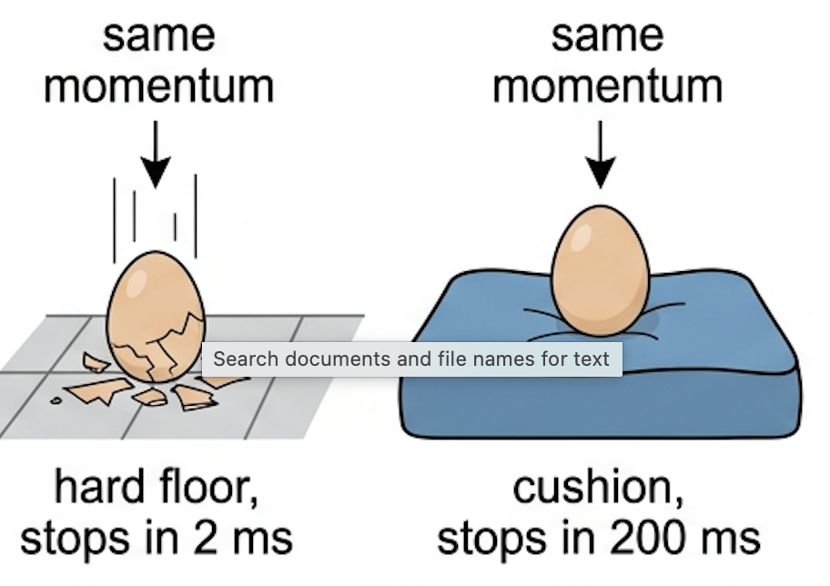
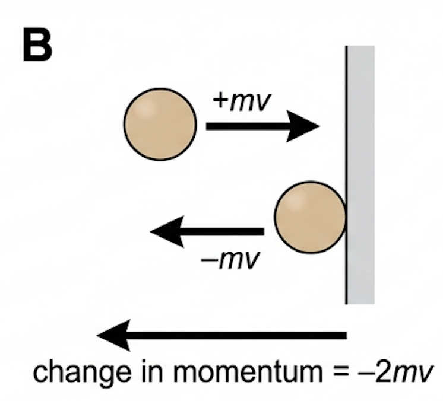
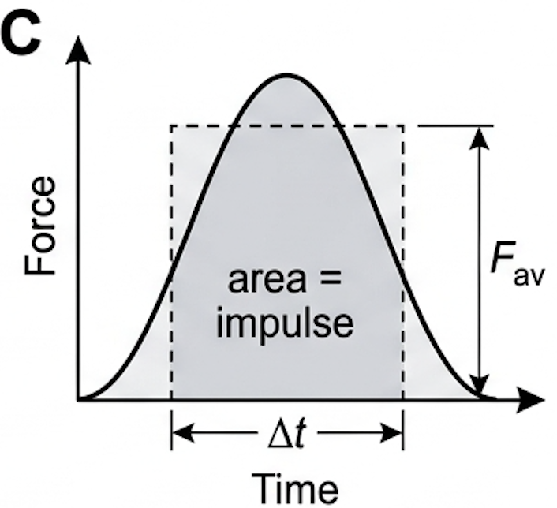
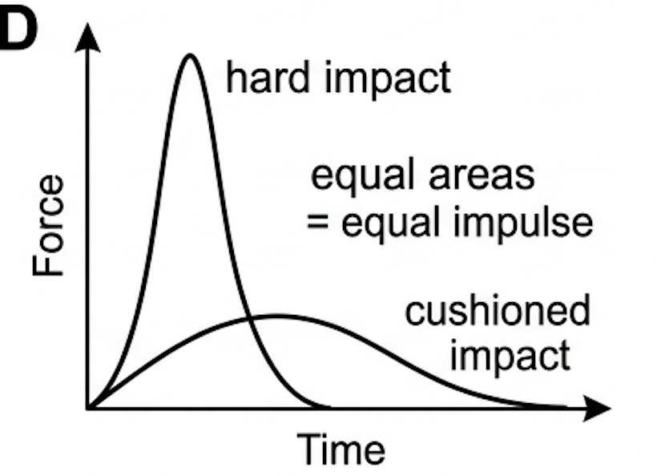
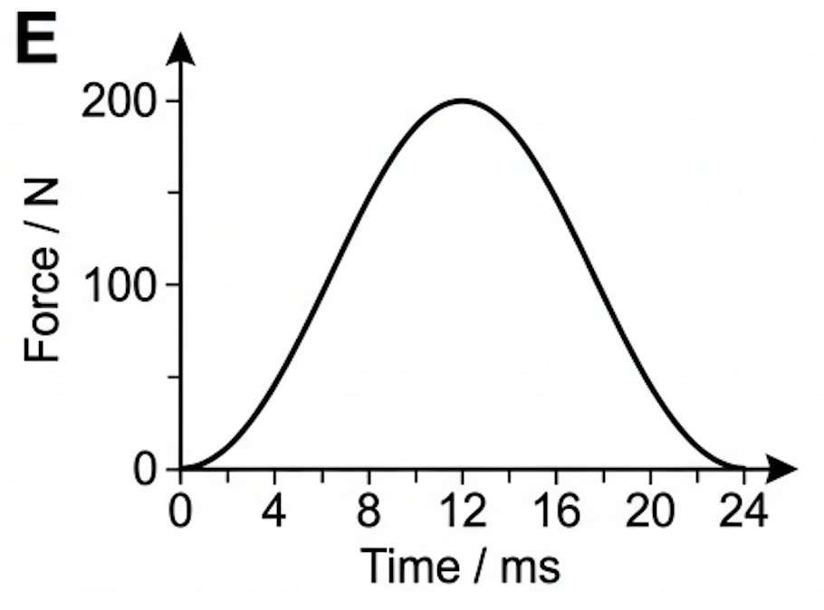
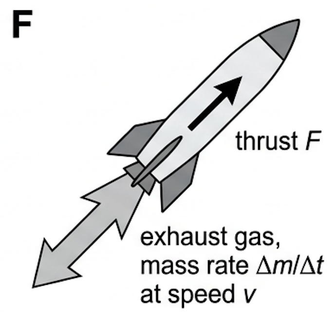

Part of A.2 Forces and Momentum
· Unit A — IB Physics 2023
4 Lesson 4 of 5 · A.2 Forces and Momentum
Momentum and Impulse
Why the same change in motion can either break an egg or leave it whole — it depends entirely on how long you take.
🎯 Hook – the egg that survives
Drop an egg 1 m onto a tiled floor and it shatters. Drop the identical egg from the same height onto a thick cushion and it survives. In both cases the egg arrives with the same momentum and ends at rest, so the change in momentum is identical. What differs is the time taken to stop — and the force is what pays the price.

Fig 1 — Same drop, same change of momentum, very different stopping times.
💡 Diagnostic question (think – then read on) — If the cushion increases the stopping time from 2 ms to 200 ms, by what factor is the average force reduced? By 100. Force is change of momentum divided by time, so a hundredfold longer impact means a hundredth of the force.
📐 Linear momentum
Linear momentum \(p\) is the product of an object's mass and its velocity. Because velocity is a vector, momentum is a vector too, and its direction always matters: before doing any momentum calculation you must choose a positive direction and stick to it.
Linear momentum
$$p = mv \qquad \text{SI unit: kg m s}^{-1}$$
A 6.0 kg object moving right at 2.0 m s⁻¹ has \(p = +12\) kg m s⁻¹; the same object moving left has \(p = -12\) kg m s⁻¹. The difference between these two states is a change of \(24\) kg m s⁻¹, not zero — a bounce involves a far bigger change of momentum than simply stopping.

Fig 2 — For a ball that rebounds at the same speed, \(\Delta p = -mv - (+mv) = -2mv\). Signs, not just magnitudes.
⚙️ Newton's second law as rate of change of momentum
Starting from \(F = ma\) and \(a = (v-u)/t\), the resultant force can be rewritten in terms of momentum:
Newton's second law, general form
$$F = \frac{\Delta p}{\Delta t}$$
This version is more powerful than \(F = ma\), because \(F = ma\) quietly assumes the mass is constant. A rocket burning fuel, a conveyor belt being loaded or a raindrop growing as it falls all change mass while they move, and only \(F = \Delta p / \Delta t\) handles them.
Rearranging gives the definition of impulse \(J\): the product of the average resultant force and the time for which it acts.
Impulse
$$J = F\Delta t = \Delta p \qquad \text{SI unit: N s}$$
N s and kg m s⁻¹ are the same unit written two ways. The statement impulse equals change of momentum is the single most useful line in this topic: it converts a messy, varying force into a clean before-and-after calculation.
✓ Examiner tip: if a question gives you a force and a time, or asks about a collision lasting milliseconds, reach for impulse — not \(F = ma\).
📈 Graphs every examiner uses
Graph type
Axes (X, Y)
Shape
What to read
Force–time (impact)
Time \(t\), force \(F\)
Rises to a peak and falls back to zero
Area under the graph = impulse = \(\Delta p\). Peak = maximum force.
Average force rectangle
Time \(t\), force \(F\)
A rectangle of equal area drawn over the curve
Its height is \(F_{\text{av}}\); its width is the contact time \(\Delta t\)
Momentum–time
Time \(t\), momentum \(p\)
Sloping line or curve
Gradient = resultant force

Fig 3 — The shaded area is the impulse; the rectangle of equal area gives \(F_{\text{av}}\).

Fig 4 — Equal areas, so equal \(\Delta p\). The cushioned impact spreads it over longer time, lowering the peak force.
💡 To estimate the area of a curved impact graph, count squares or draw a rectangle that looks like it has the same area by eye. A rough triangle, \(\tfrac{1}{2} F_{\text{max}} \Delta t\), is usually accepted.
✍️ Worked example – returning a tennis serve
1
Identify: A 57 g tennis ball travelling right at 24 m s⁻¹ is struck by a racket moving the other way. The force–time graph of the impact (Fig 5) peaks at 200 N over a contact time of 24 ms. Find the impulse and the ball's velocity afterwards. This is an impulse–momentum problem, not an \(F=ma\) one.
2
Data: \(m = 0.057\ \text{kg}\), \(u = +24\ \text{m s}^{-1}\) (taking right as positive), \(F_{\text{max}} = 200\ \text{N}\), \(\Delta t = 24\ \text{ms} = 0.024\ \text{s}\). Treating the curve as roughly triangular, area \(\approx \tfrac{1}{2} \times 200 \times 0.024\).
3
Equation: \(J = \text{area} = 2.4\ \text{N s}\), directed to the left, so \(J = -2.4\ \text{N s}\). Then \(J = \Delta p = m(v-u)\), giving \(-2.4 = 0.057(v - 24)\).
4
Answer: \(v - 24 = -42\), so \(v = -18\ \text{m s}^{-1}\) — the ball leaves at 18 m s⁻¹ to the left. Note the change of speed, 42 m s⁻¹, is far larger than either speed alone, because the ball reversed direction.

Fig 5 — Force on the ball during the 24 ms of racket contact.
⚠️ Looser strings lengthen the contact time, so the same force delivers a larger impulse and a faster return — at the cost of less control over direction.
🚗 Real-world: crumple zones and airbags
A car in a crash must lose all its momentum whatever happens, so \(\Delta p\) is fixed. Crumple zones, airbags and seatbelts all do the same job: they stretch \(\Delta t\). Doubling the stopping time halves the average force on the occupants.
✓ Examiner tip: never say safety features "reduce the change in momentum". They reduce the force by increasing the time over which the same change of momentum happens.
🚀 HL Extension – rocket propulsion
A rocket throws mass backwards to gain momentum forwards. Since the ejected gas has mass rate \(\Delta m/\Delta t\) leaving at speed \(v\):
Challenge: Exhaust leaves at \(1.5\times10^{4}\ \text{kg s}^{-1}\) with a speed of \(2.3\times10^{3}\ \text{m s}^{-1}\). Find the thrust. (Answer: \(3.5\times10^{7}\ \text{N}\))

Fig 6 — Momentum given to the gas equals momentum gained by the rocket.
⚠️ Trap corner – common mistakes
Misconception
Correct view
Momentum is a scalar, so just multiply mass by speed
Momentum is a vector. Assign signs from a chosen positive direction before adding or subtracting.
A ball that bounces back has \(\Delta p = 0\) because the speed is unchanged
The velocity reversed, so \(\Delta p = -2mv\) — the largest possible change for that speed.
An airbag reduces the change of momentum
It increases the contact time. \(\Delta p\) is fixed; \(F = \Delta p/\Delta t\) falls.
The gradient of a force–time graph gives the impulse
The area gives the impulse. Gradient of a force–time graph has no standard meaning here.
\(F = ma\) works in every situation
It assumes constant mass. Use \(F = \Delta p/\Delta t\) for rockets, jets or any changing-mass system.
⚠️ Most common slip: forgetting the minus sign on the rebound velocity, which halves the calculated impulse and loses every mark that follows.
p = mvF = Δp/ΔtJ = FΔt = ΔpN s ≡ kg m s⁻¹area under F–t graph = impulseF = (Δm/Δt)v (HL)
Practice check — multiple choice
1. A ball of mass 0.20 kg hits a wall at 6.0 m s⁻¹ and rebounds along the same line at 4.0 m s⁻¹. The magnitude of the change in momentum is
A 0.40 kg m s⁻¹
B 1.2 kg m s⁻¹
C 2.0 kg m s⁻¹
D 20 kg m s⁻¹
2. The area under a force–time graph for a collision represents
A the work done on the object
B the change in momentum of the object
C the average force during the impact
D the acceleration of the object
3. Two identical cars stop from the same speed. Car X hits a rigid wall and stops in 0.10 s; car Y hits a crash barrier and stops in 0.50 s. Compared with car X, car Y experiences
A a smaller change of momentum and a smaller average force
B a smaller change of momentum and the same average force
C the same change of momentum and a larger average force
D the same change of momentum and an average force one fifth as large
4. A resultant force of 15 N acts on a stationary 3.0 kg trolley for 4.0 s. The final speed of the trolley is
A 5.0 m s⁻¹
B 11 m s⁻¹
C 20 m s⁻¹
D 60 m s⁻¹
Practice check — fill in the blanks
Complete the statements:
Linear momentum is defined as mass multiplied by , and it is a quantity. Impulse is the product of average force and , and it is equal to the change in . On a force–time graph the impulse is found from the under the line.
Exam‑style questions
Exam question · State / Explain
(a) State what is meant by the impulse of a force. [1] (b) Explain, in terms of momentum, how a crumple zone reduces the injuries suffered by a driver in a collision. [3]
4 marks
(a) ✓ The product of the average resultant force and the time for which it acts, equal to the change of momentum produced. (b) ✓ The driver's change of momentum is the same whether or not the car crumples. ✓ The crumple zone increases the time over which that change occurs. ✓ Since \(F = \Delta p/\Delta t\), a longer time gives a smaller average force on the driver.
Exam question · Calculate
A ball of mass 260 g falls vertically and hits the ground at 7.3 m s⁻¹. It rebounds vertically at 5.5 m s⁻¹. (a) Calculate the change of momentum of the ball. [2] (b) The impact lasts 0.38 s. Calculate the average force exerted on the ball by the ground. [2] (c) Suggest why the maximum force is greater than your answer to (b). [1]
5 marks
(a) ✓ Taking upwards as positive: \(\Delta p = 0.260(+5.5) - 0.260(-7.3)\). ✓ \(= 1.43 + 1.90 = 3.3\ \text{kg m s}^{-1}\) upwards. (b) ✓ \(F = \Delta p/\Delta t = 3.3/0.38\). ✓ \(= 8.7\ \text{N}\) (this is the resultant; the contact force also supports the weight). (c) ✓ The force is not constant during contact — it rises to a peak and falls again, so the peak exceeds the average.
Exam question · Sketch / Compare
A soft ball and a hard ball of equal mass strike a wall at the same speed and rebound at the same speed. (a) Sketch, on the same axes, force–time graphs for the two impacts. [3] (b) Compare the impulse and the maximum force in the two cases. [2]
5 marks
(a) ✓ Both curves start and finish at zero force, rising to a peak. ✓ The hard ball's curve is tall and narrow; the soft ball's is lower and wider. ✓ The two curves enclose equal areas. (b) ✓ The impulse is the same for both, since the change of momentum is the same. ✓ The hard ball experiences the greater maximum force, because the same impulse is delivered in a shorter contact time.